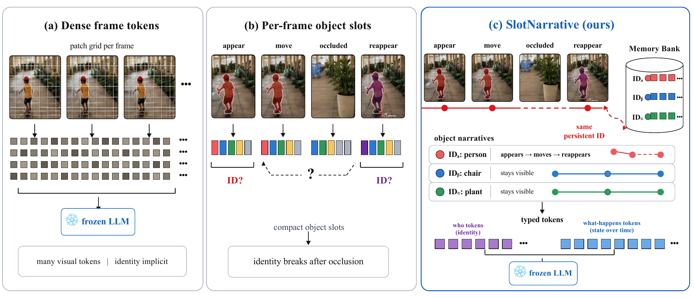

Preprint
SlotNarrative
Persistent object narrativesVideo-LLMs · Token efficiencyLatest
Persistent Object Narratives for Token-Efficient Video Language Models
arXiv preprint · 2026
SlotNarrative organizes recurring visual evidence into compact object-state tokens, using 144 allocated visual-token positions for a frozen Video-LLM.